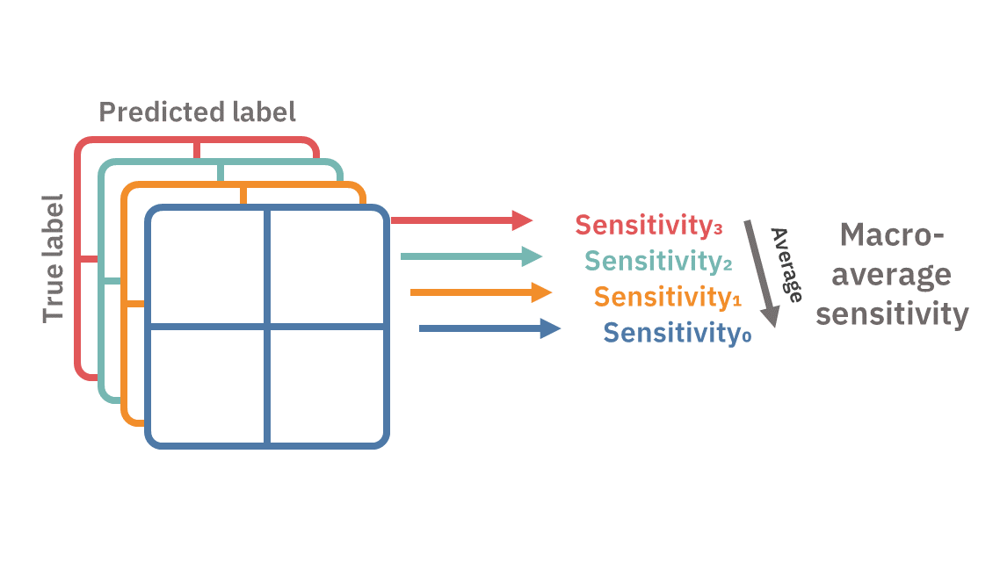

A visual way to think of macro and micro averages in classification metrics
Explaining what macro-average and micro-average metrics are.
For completeness, this article spends most its words explaining what a confusion matrix is. If you already familiar, you can probably understand the article by just scrolling down through the pretty pictures.
Confusion matrix
Almost every classification metric can be defined by a confusion matrix. Those that cannot — can be defined by several. This makes the confusion matrix the most basic way to evaluate classification models.
Evaluating a binary classification, we can either be right or wrong. But we can cross-tabulate the four possible combinations of predicted labels and true labels into a contingency table. On the diagonal, we count the correct predictions, and off the diagonal we count our mistakes.
First, we can be correct on the positive label, these predictions are truly positive (TP). Second, we can be correct on the negative label, making these predictions truly negative (TN). But correct predictions are all alike; every wrong prediction is wrong in its own way. The first type of error is type-1 error — positive predictions that actually belong to the negative class — these are falsely positive predictions. Lastly, the fourth combination and the second type of error, we can wrongly predict the positive label to be negative — these predictions are falsely negative.
This four-cell matrix can define a plethora of metrics. For example, accuracy can be defined by summing the TP and TN and dividing by the sum of the matrix; sensitivity is the TP divided by actual positive observations; specificity is similar for the negatives: dividing TN by the actual negative observations; and there are much, much more. Especially when we can also use the metrics themselves to create compound metrics, the sky is the limit.
Multiclass confusion matrix
Confusion matrices can be naturally expended into multi-class classification. Instead of a 2-by-2 table, we'll have a k-by-k table enumerating the different combinations of predictions and labels. However, the metrics in this multi-class setting are not always well defined. This is because we no longer have a single false positive or false negative count, but rather several ones — one for each pair of misclassified classes.
To redefine these metrics for multiple classes, we must first convert our single k-by-k table to k 2-by-2 tables. We simply aggregate the multiple false-positives, false negatives, and true negatives into one of each. This is the same as thinking of our multiclass classifier as multiple one-vs.-rest binary classifiers.
We now have a bunch of 2-by-2 confusion matrices, let's stack them up. Think of it as a volume, or a 3D tensor. In each simple confusion matrix, the metrics — like precision, specificity, or recall — are well defined. However, we need to extract a single metric from them. This is when averaging — micro and macro — come into play.
Macro-averaging
In macro-averaging, we first reduce each of the k confusion matrices into a desired metric, and then average out the k scores into a single score.

Micro-averaging
In micro-averaging, we will first sum the TPs, TNs, FPs, and FNs across the different confusion matrices, say we denote them as ΣTP, ΣTN, ΣFP, and ΣFN. We then use these aggregated measures as if they form a confusion matrix of their own and use them to calculate the desired metrics.
Summary
Multiclass confusion matrices can be expanded to stacked one-vs.-rest confusion matrix. Under this formulation, micro- and macro-averages differ by which axis is reduced first. Macro-average first reduces the confusion matrices into scores and then averages the scores. Micro-average first reduces the multiple confusion matrices into a single confusion matrix, and then calculates the score.